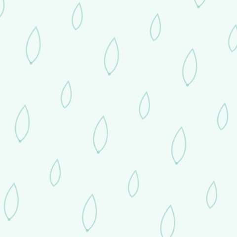

Version 1.0 · June 2026
The calm practice tool for therapists. This document is the single source of truth for how Faresay looks, sounds and feels. Keep it close; consistency is what makes a small brand feel trusted.
Faresay Ltd · Company No. 17302034 (England & Wales) · faresay.com
1. The idea in one line
Faresay gives independent therapists their whole practice in one calm place — and keeps their clients theirs.
Everything below serves two feelings: calm (for clinicians and the often-anxious people they help) and trust (with sensitive health data and livelihoods on the line).
2. Logo
Primary lockup
The lotus mark beside the lowercase faresay wordmark.
The mark
A lotus — opening, calm, breathing. It is also our breathing animation on the homepage. The mark may be used alone as an app icon, avatar or favicon.

Monochrome
For single-colour printing, embossing, watermarks, and dark/light backgrounds. Never recolour the gradient mark to a flat brand tint — use these.
App icon / favicon
The lotus in a teal rounded square.
Clear space & minimum size
- Clear space: keep a margin equal to the height of the lotus mark on all sides. Nothing intrudes.
- Minimum size: primary lockup no smaller than 120px / 32mm wide; mark alone no smaller than 24px / 8mm.
Don'ts
- Don't stretch, rotate or skew.
- Don't change the wordmark font or capitalise it ("faresay" is always lowercase).
- Don't recolour outside the palette, add shadows/outlines/bevels, or place the gradient mark on a busy photo without the white space it needs.
- Don't box the logo or add a tagline lockup without sign-off.
3. Colour
Calm evergreen teal, warm sand neutrals (never cold grey), a single warm coral accent.
Brand — evergreen teal (primary)
#f0faf7 #d7f0e8 #b0e1d3 #7fcab8 #4fad99 #2f9180 #217567 #1d5d53 #1b4a44 #193e39
Primary actions use brand-600 #217567; primary text/ink uses brand-900 #193e39.
Sand — warm neutral
#faf8f5 #f3efe8 #e8e1d5 #d6cab7 #b8a78e #9c8870 #80705c #665a4b #4a4137 #2e2920
Backgrounds use sand-50; body text sand-900; muted text sand-500; borders sand-200.
Coral — warm accent
#fef4f0 #fde4d9 #fac7b3 #f5a183 #ee7551 #e1542f #c93f1f
Used sparingly — highlights, "founding" badges, a single CTA emphasis. Never the dominant colour.
Accessibility: body text is sand-900 on sand-50 / white (passes AA). For text on teal, use white on brand-600 or darker. Coral is an accent, not a text colour on light backgrounds at small sizes.
4. Typography
Two families, doing two jobs.
- Fraunces (serif) — display. Headlines, the wordmark, the occasional warm pull-quote. Weight 600. Tighter tracking at large sizes. It carries the "made by people with heart" feeling.
- Inter (sans-serif) — everything else. Body, UI, labels, captions. Weights 400/500/600. Clear, modern, quietly competent.
Scale (web): Display 48 · H1 36 · H2 24 · H3 18 · Body 16 · Small 13. Generous line-height (1.6 body). Never crowd text — whitespace is part of the brand.
5. Graphic style
- Soft, breathing, uncluttered. Rounded corners (8/16/24px), generous padding, gentle drop shadows (low opacity, teal-tinted), soft radial "glow" blobs behind hero content.
- Motion is calm and slow (≈0.6s ease, the 4-7-8 lotus breath). Always honour
prefers-reduced-motion. - Cards over clutter. One idea per card. Plenty of air.
- Spring ease for delight:
cubic-bezier(0.32, 0.72, 0, 1).
6. Brand patterns
A faint, tileable lotus-petal motif for backgrounds, section breaks, email headers and packaging. Keep it very low contrast — a texture, never a focal point. Teal line petals (brand-300) on sand/cream.

7. Photography style guide
When real photography is commissioned, direct it to feel like the brand: - Real, calm, unposed. Natural light, soft shadows, quiet interiors, plants, texture. A therapist's actual room, not a stock "headset call-centre." - Human and warm, diverse, gentle expressions — never the clichéd "head-in-hands sad person" of mental-health stock. Dignity over distress. - Muted, warm grade — sand and teal tones, low saturation, airy. Avoid cold blue corporate tech imagery. - Negative space for text overlays; shoot loose. - Privacy: never show real client faces or identifiable records. Models + consent only.
8. Illustration style
- Line-and-soft-fill, single-weight rounded strokes in teal, with occasional coral accent and sand fills.
- Organic, botanical, breathing — lotus, leaves, water, gentle curves — over hard geometric tech iconography.
- Flat, calm, friendly; no heavy gradients beyond the lotus mark; no drop shadows on illustrations.
- Inclusive, abstract human forms where people appear.
9. Brand voice
We sound like a calm, capable friend who happens to know the admin — not a SaaS sales deck, not a clinician's manual.
Principles 1. Plain English, always. No jargon, no acronyms. "Set up in about 15 minutes," not "rapid onboarding." 2. Calm and reassuring. Short sentences. Room to breathe. Never urgent or hype-y. 3. Warm, with heart. We respect the work therapists do and the people they help. 4. Honest and humble. We say what's true, including limits. We don't oversell. 5. Therapist-first dignity. The therapist is the professional and the customer. "Your clients stay yours."
Say / don't say - "Your whole practice, in one calm place." — not "All-in-one practice management SaaS." - "Keep your own clients." — not "Client acquisition funnel." - "Get paid automatically." — not "Monetise your caseload." - "No question is too small." — not "24/7 enterprise support SLAs."
Sensitive-topic rule: when mental-health distress is in frame, drop all playfulness. Plain, kind, useful. Always signpost crisis help where relevant ("Not a crisis service — in an emergency call 999 or Samaritans 116 123").
10. Usage guidelines (quick rules)
- Backgrounds: prefer sand-50 or white; teal for emphasis sections; the petal pattern only as faint texture.
- One coral accent per view, maximum.
- Buttons: primary = brand-600 pill, white text; secondary = brand-200 border, brand-700 text.
- Always pair Fraunces headlines with Inter body — never set body copy in Fraunces.
- Respect clear space and minimum sizes for the logo.
- Honour reduced-motion in any animated asset.
Brand Story
Elevator pitch (20 words)
Faresay is the calm, private practice tool that lets independent therapists run their whole practice — and keep their clients theirs.
50 words
Faresay brings a therapist's clients, scheduling, secure video and card payments into one calm place — simple enough to run from a phone, private enough for the work they do. No marketplace cut, no middleman: a fair monthly subscription. The therapist owns the relationship and the record. Always.
150 words
Most software treats therapists as a funnel: take a cut of every session, own the client, lock in the data. Faresay does the opposite. It's a calm, private practice tool that brings everything an independent therapist needs — clients, scheduling, secure video, reminders and card payments — into one place that's genuinely simple to use, even from a phone. Set-up takes about fifteen minutes. There's no marketplace commission skimming each session; just a fair monthly subscription. Crucially, the therapist stays the data controller: they own the client relationship and the clinical record, and they can leave with both. Built UK-first for BACP, UKCP and NCPS practitioners, with privacy and safeguarding designed in from the start, Faresay exists so good therapists can spend less time on admin and more time helping people — without handing their practice to a platform.
About us
Faresay is a UK company building the practice software we wished therapists had: calm, private, fair. We're early, bootstrapped and obsessive about two things — making the everyday admin of a practice genuinely effortless, and protecting the trust at the heart of therapy. We don't sit between a therapist and their client. We're the quiet tool in the background that makes the work easier.
Mission
To give every independent therapist a calm, fair, private way to run their practice — so they can spend their energy on people, not paperwork.
Vision
A world where running an ethical, independent practice is as simple as doing the work you trained for — and no platform stands between a therapist and the people they help.
Why we exist
Because the people who care for our minds deserve tools that respect them. Therapists were being asked to choose between clunky software, expensive marketplaces that take a cut and own the client, and a pile of spreadsheets. We exist to end that trade-off.
Company values
- Calm by design — in the product, the brand, and how we work.
- Therapists own their practice — clients and records are theirs, full stop.
- Privacy is sacred — special-category data, handled like it matters.
- Plain and honest — no jargon, no dark patterns, no overselling.
- Fair, not extractive — a clear subscription, never a cut of the care.
- Heart first — we're building for real people doing hard, good work.
Tone of voice (summary)
Calm, warm, plain-spoken, honest. A capable friend, not a sales deck. Short sentences, room to breathe, dignity for everyone in frame. Playful only where it's safe to be; never where someone might be hurting.
Brand assets (SVG), tokens (JSON) and this document (PDF) live in faresay/brand/. For .ai, open the SVGs in Illustrator. For Figma, import tokens.json (Tokens Studio) and the SVG kit. Photography and screenshots to be produced to the direction above.